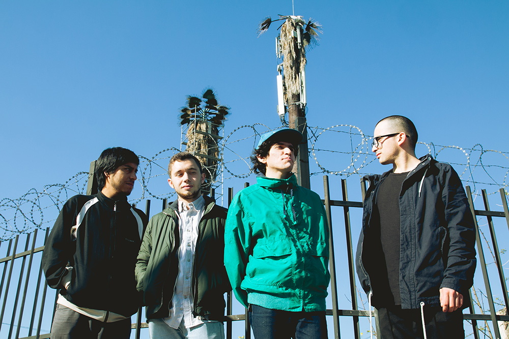

Descarga “José de los Rayos”, el nuevo sencillo de Niños del Cerro
El single es el segundo adelanto de “Nonato Coo”, primer LP de la banda editado en Piloto, que será estrenado a finales de octubre.
Niños del Cerro, conjunto de La Florida (Santiago, Chile) formado por Simón Campusano (voz, guitarra), José Mazurett (batería), Felipe Villarubia (bajo) e Ignacio Castillo (guitarra) presenta el segundo adelanto de su primer larga duración “Nonato Coo”. El single lleva el nombre “José de Los Rayos” y ya puedes descargarlo de forma libre desde la web de Piloto.
La canción relata la historia de un joven que sufre episodios de pánico, expresado en letras crípticas y ritmos fuertes, en palabras del vocalista y compositor Simón Campusano, con guitarras inspiradas en la chicha peruana, junto con melodías experimentales que serán pasajes comunes y predominantes en su próximo disco. “Se supone que ‘José de los Rayos’ fui yo en algún momento”, agrega Campusano.
"José de los Rayos" es el segundo sencillo de la banda, luego de la salida del single “La Pajarería”, ambos temas formarán parte de la primera placa del grupo, titulada “Nonato Coo”, en honor a la calle que atraviesa la comuna de Puente Alto. El disco será estrenado este 29 de octubre y está articulado en diversas capas y ritmos que evocan desde el house hasta melodías tropicales y propias de la música latinoamericana, además de letras que evocan al suburbio y a los barrios de la periferia santiaguina. "Nonato Coo" será el segundo larga duración editado a través de Piloto, luego del exitoso estreno de "Temporada" (Piloto, 2015), disco de la banda chilena Patio Solar.
Puedes escuchar y descargar de forma libre “José de los Rayos” en la página web de Piloto (http://piloto.club/jose-de-los-rayos) o descarga de manera directa aquí smarturl.it/jose-de-los-rayos. Canciones en soundcloud aquí. Revisa el teaser de "Nonato Coo", el primer disco de Niños del Cerro aquí (https://www.youtube.com/watch?v=ePCgHsPmdWA)
ADJUNTOS:
FOTO 1 GRANDE BANDA NIÑOS DEL CERRO
FOTO 2 GRANDE BANDA NIÑOS DEL CERRO VERTICAL
REDES SOCIALES: FACEBOOK NIÑOS DEL CERRO
PILOTO: Sitio Web Facebook Twitter Instagram Soundcloud Youtube
✈ comunicaciones@piloto.club ✈ contacto@piloto.club ✈